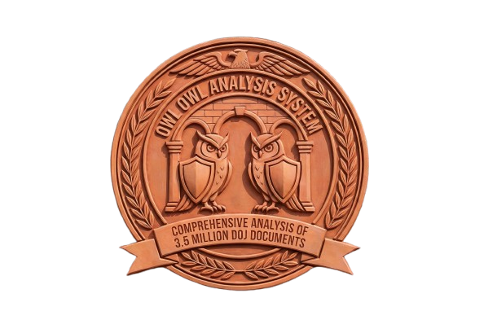

18 U.S.C. § 1591
Sex Trafficking of Children
GUILTY - OVERWHELMING

Comprehensive Analysis of 3.5 Million DOJ Documents
Based on comprehensive analysis of 3.5 million DOJ pages released under the Epstein Files Transparency Act, application of federal criminal law, and evaluation from both prosecution and defense perspectives.
Suspected coded terminology found in the Epstein files
Documented connections to secret societies, occult practices, and esoteric knowledge
Only 12 members at any time, assigned zodiac signs. Replaced only when someone dies.
~390 members from NA, Europe, Asia. Founded by David Rockefeller.
Most powerful US foreign policy organization
EFTA 01613019 (iMessage 2017): "Both are welcome to our secret society"
EFTA June 2011: Epstein designing "four levels of Topkapi ideas: initiates, favorites, beliefs, principle"
Topkapi Palace hierarchy: Novice → Trainee → Favorite → Chief → Consort
EFTA 02707466: Architect calculated golden ratio (1.618) for Little St. James dome, rocks, doors
Filed December 2021, LA field office. Active Epstein child sex trafficking investigation.
EFTA 02507843 (March 2018): Epstein forwards article about Robert Maxwell to his circle
Creator of Sophia robot
Cognitive neuroscientist
Orthodox Jewish spiritual adviser
Crypto pioneer
Quantum computing scientist
AI researcher MIT/Harvard
How Epstein's network intersected with other major scandals and leaks
How victims were recruited, trafficked, and exploited
Siad sends girl, Epstein asks: "How many tickets do you want for Woody?" (Woody Allen). "Two."
Epstein: "Doesn't look too happy" → comments on body → "She is very sweet"
Pattern: "Very nice, easygoing. Dream to work in United States or visit the United States working as a model in Dubai"
Asked age: "22 or 23. I forgot to ask her. She looks younger."
Thai actress: Epstein can see her Wednesday, complains she wants to meet in restaurant: "I don't do that in New York"
"No evidence to even predicate an investigation against uncharged third parties"
Traveled to island, thought she'd be "kidnapped and never seen again"
Driver was nice but eerie, tinted windows
20-30 girls recruited, ages 15-20
Victims bonded with each other
Worked as "unpaid assistant" for months
Epstein escalated: directed her to "join him in the bath"
Told her "she had the job and now needed to keep it"
Tasks: packing, making bed, laundry, food prep, foot/shoulder massage, organizing events with "academic and financial luminaries"
Some paid hundreds of thousands/year — "basically like slavery"
How powerful people protected Epstein AFTER his conviction
Epstein: "Woody [Allen] said he would help edit. Not sure how to stage, what points to make. Goal is to humanize the monster."
"I'm watching our second hour now. Guys were blown away."
"Yes, yes, yes, of course, but we must counter 'rapist who traffics in female children to be raped by world's most powerful, richest men' — that can't be redeemed. Can't redeem the unredeemable. You are a lot of things which we will show, but you are not that."
On camera: "You're the smartest guy in the room, right? You know that."
Looped in for PR strategy: "Yep, he would confidentially like to sit and help if you like"
"I watch the horrible way you've been treated by the press in public. It's painful to say, but I think the best way to proceed is to ignore it."
"What the vultures dearly want is a public response which then provides a public opening. In general I think it's best not to react unless directly questioned."
Sent to Matthew Hiltzik who responded: "I think that is wise"
"Dear Jeffrey, it was really nice seeing you yesterday. The boys in water sports can't stop speaking about it anytime you are in the area. Would love to see you as long as you bring your harem."
PR Advice from Branson:
"If Bill Gates was willing to say that you've been a brilliant adviser to him, that you slipped up many years ago by sleeping with a 17-and-a-half-year-old and were punished for it, that you've more than learned your lesson and have done nothing against the law since. And yes, as a single man, you have a penchant for free women, but there's nothing wrong with that."
Epstein: "Nice seeing you. Thanks for your hospitality. I appreciate your public relations thoughts."
Branson rep: business meeting, women were adults
Subject: "Got a fresh shipment" → Epstein responds "me too" with redacted image
Attia: "Please tell me you found that picture online." Epstein: "Afraid not."
Attia: "You know the biggest problem with becoming friends with you. The life you lead is so outrageous yet I can't tell a soul."
Attia: "I go into Jeffrey Epstein withdrawal when I don't see him"
Attia: "I think you might have a more interesting life than the Dos Equis guy"
"If you can make out the check to me, it looks very bad because then it looks like a gift to me"
"I don't want to be one of your women or should I say girls"
"I would be much more expensive than your girls. You wouldn't be able to afford me."
Epstein: "As long as I follow orders :)"
Allen: "Woody says the exact same thing, but in a dirtier way"
Epstein: "What did he say?" Allen: "Are you kidding? I can't put it in writing."
Offered to help edit Bannon's rehabilitation documentary
On video: "I was never in the room with him socially, for business, or for even philanthropy"
Called Epstein "the greatest blackmailer ever"
BUT emails show: Epstein saying "Nice seeing you" AFTER the conviction
NY Times: Lutnick said he "spent zero time with him"
"No one fought harder for the full release of the Epstein files than I did"
Claims never on island, never at parties
But files show: "What day/night would be the wildest party on your island?"
His stated playbook: "admit nothing, deny everything, and make counter accusations"
Decoded victim journal revealing abuse, occult connections, and an alleged Epstein child
"I don't understand. Just say these things happened, but he doesn't believe that. They yelled and screamed and he said it will be the same in a couple of months."
"She said she was fed up with it all. I don't understand what is going on. No one will tell me."
"I can't go to school like this. I can't stop shaking. Why won't anyone make it stop?"
"I know Ghislaine is trying, but nothing changes."
"Why didn't I close my eyes in the hall?"
"Ghislaine said she was beautiful. She was not — she was a beautiful girl. I heard her."
"Where is she? Why did she stop whimpering? She was born. I heard the tiny cries."
"I can't do this anymore."
Implication: A baby was born with Ghislaine present — allegedly Epstein's child
Epstein's death controversy, evidence destruction, and the accountability gap
"Catastrophic failure of protocol fueled by gross incompetence"
EFTA 02729919 (Oct 2021): MCC closing, Bureau of Prisons:
"I was instructed to destroy all evidence not needed for investigations"
FBI didn't even know what evidence existed
EFTA 01748314: Document retention policy across ALL Epstein entities:
"1999-2006: we shred. 2007-2014: we scan and shred"
Companies: Little St. James FTC, JEVI, Zorro Ranch, JEG FT, Real Estate, Hyperion, NES — EVERY entity
"I was under the impression there was a homemade sex video... Maybe people were afraid to put anything into writing"
— FBI agent email, IN 2025
STI claim: Epstein claimed Gates contracted STI "after encounters with Russian girls"
Alleged Gates asked Epstein for antibiotics to "surreptitiously give to his then-wife Melinda without her knowledge"
Epstein facilitated "trysts for Gates with married women"
Helped Gates "acquire drugs to deal with consequences of alleged sexual encounters"
Spokesperson: "absolutely absurd and completely false"
Gates: regrets "every minute he spent with Epstein" — "serious error in judgment"
Claims association was about finding donors for philanthropy
Notes many claims come from emails Epstein "wrote to himself that were never sent" — suggests fabricated to entrap
"It is not a crime to party with Mr. Epstein. It isn't a crime to email with Mr. Epstein."
— Attorney General
Everyone follows same playbook: admit nothing, deny everything, counter-accuse
The most disturbing emails and the government's refusal to investigate
Email from REDACTED person to Epstein:
"Thank you for a fun night. Your littlest girl was a little naughty."
Epstein responds: "Great."
Sender's name completely redacted — WHY is this person being protected?
EFTA 02394816Five redacted images sent to Epstein's email
Text: "New Brazilian just arrived. Sexy and cute. 9 yo." (9 years old)
"Best regards" — everything else redacted
Sender completely protected by government redactions. Clear evidence of international child trafficking.
EFTA 02706746Perpetrators: Names redacted, identities protected, zero prosecutions
Victims: Exposed, re-traumatized, no justice
Asked: "Who, if anyone, did Epstein traffic these young women to besides himself?"
Patel: "Himself. There is no credible information. None. If there were, I would bring the case yesterday."
This statement was made BEFORE the latest file disclosure.
"We reviewed the files... there's nothing in there that allows us to prosecute anybody"
Said about files containing "9 yo. sexy and cute" emails and "your littlest girl was naughty" messages
When reporter asked about Epstein survivors: attacked the reporter personally, called CNN dishonest
Said DOJ "should just say we have other things to do" — suggesting they should STOP investigating
"That whole thing has turned out... other than Bill Clinton and Bill Gates and lots of people"
Deflects to others while suggesting investigation should end
If you're powerful enough in America, you can traffic children with impunity.
New connections discovered in the latest file review
December 2013 email chain (AFTER 2008 conviction):
Elon: "Will be in BVI St. Bart's area over the holidays? Is there a good time to visit?"
Epstein: "Any day first aid, play it by ear if you want. Always space for you."
Elon: "Okay, probably the first then."
Epstein: "The second or third would be perfect. I will come and get you."
Elon: "I need to fly back to LA on the night of the second... I could fly back early on the third. We'll be in Saints Bart. When should we head to your island on the second?"
Musk's public statement: "Epstein tried to get me to go onto his island and I refused"
Emails show: Active planning to visit the island, asking when to "head to your island on the second"
Musk's response: Called the release "a distraction"
jail.world archives all Epstein emails permanently — more reliable than DOJ which takes files up/down
Epstein to Kotick: "I'm all for indoctrinating kids into an economy"
Discussion about real-world rewards for children: "Learn to read, cell phone minutes, iPhone credits, virtual items in games"
Epstein to Kotick: "The girls and I are going to see Elon Musk at SpaceX tomorrow. Are you around?"
Kotick: "Thanks, but rather see you. Taking girls after to Bair."
What "girls"? Why is this phrasing so casual in correspondence with a known child sex trafficker?
Multiple email exchanges with Epstein
No public comment from Kotick on the disclosed emails
Epstein email: "Last night and this morning fun. Also met some cool people. There's a cool guy kid that you should meet, Christopher P. He is only 23."
Date: October 20, 2011
Boris to Jeffrey: "Yes, he is great. I had no clue who he was when we met. He'll be a friend."
Jeffrey: "I like Moot a lot. I drove him home. He is very bright."
Defcon organizer (DarkTangent) clarified: Epstein approached for free badges, was warned away
"My boys tell me the new trick is to get caught. The newer trick: false flags. Popular: Iran, China, Russian Balkans. Accomplishes the same goals."
Email from "Gino U" to Epstein about "stages model" mentoring:
"Caravan trip has been wonderful meeting people that are stage three — developing a different perspective of reality and discovering the gifts they have"
"Science-based approach and eastern practices to help sort stage three people out"
"Seth, we should explore the biological consequences of time travel. It would be amusing to calculate the rate of evolution of a population that can travel in time."